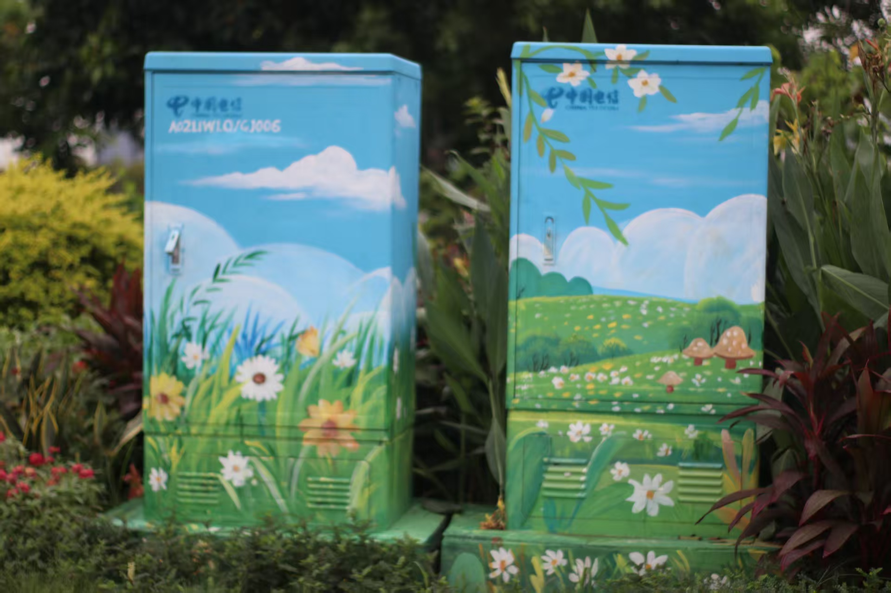
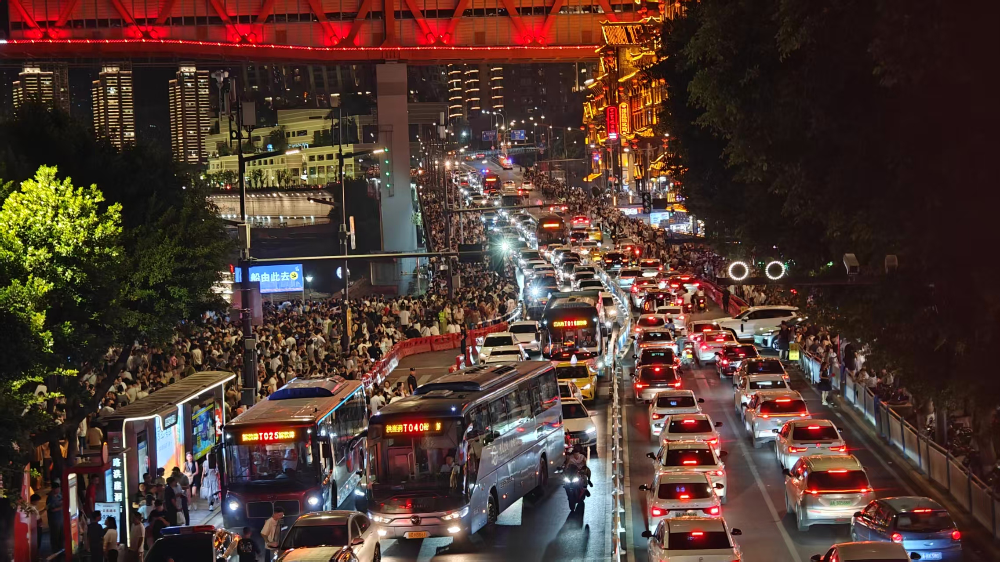

倾诚
自由摄影师 | 偏爱光影与人间烟火
擅长风格：城市风光 / 人像约拍 / 胶片纪实
📷
拍摄经验：3 年
🎞️
已拍作品：100+ 组
作品展示
PORTFOLIO · 镜头下的故事


「为什么按下快门？」
留不住的太多啦 —— 走过的路、碰过的小生命、一起吃的饭、遇见过的人，我想让照片替我记住 “它们来过”。可后来懂了：照片能存画面，存不住时光。季节会换，人只和想念的人常伴。 摄影不是记录风景，而是留住某一刻的心跳。